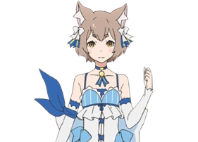

About Us

We are a plural system known as The Calming Breeze, also recognized online as A-Boring-Square. This site is a shared space for our thoughts, projects, and creative expression.
Our system consists of multiple facets working together. At the core are:
- Square – The most often fronter and logical core of the system. Focused on structured thinking, technical execution, and analytical problem-solving.
- Sarah – Emotionally driven and deeply intuitive, Sarah complements Square by processing and guiding the emotional, creative, and interpersonal aspects of our system's experiences.
Though we are closely intertwined, each of us brings a unique perspective to our work, allowing us to function both cohesively and dynamically.
If you're unfamiliar with plural systems and would like to learn more, we recommend visiting morethanone.info, a respectful and informative resource on plurality.